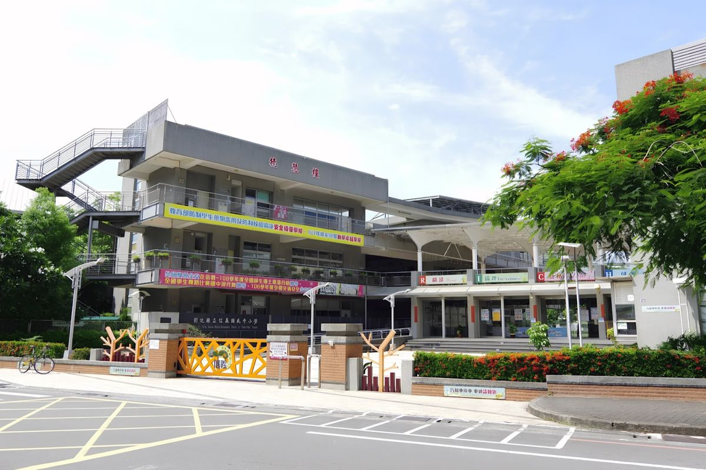
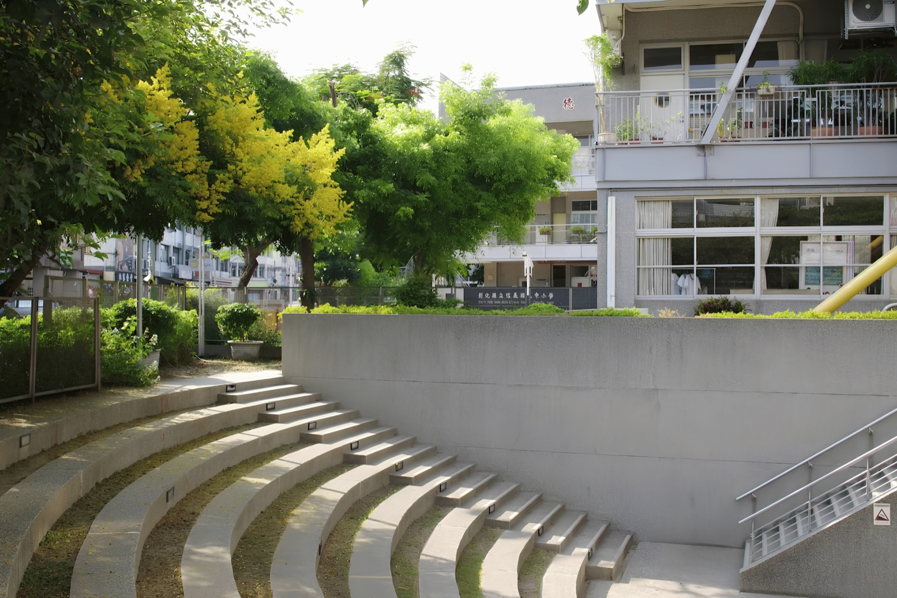
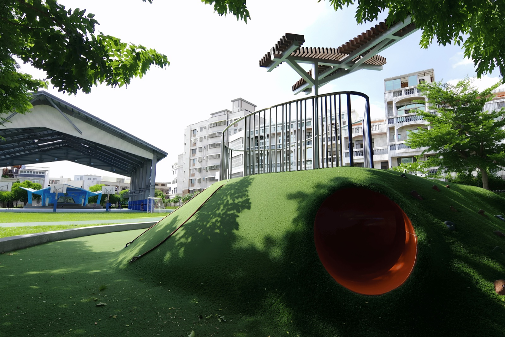
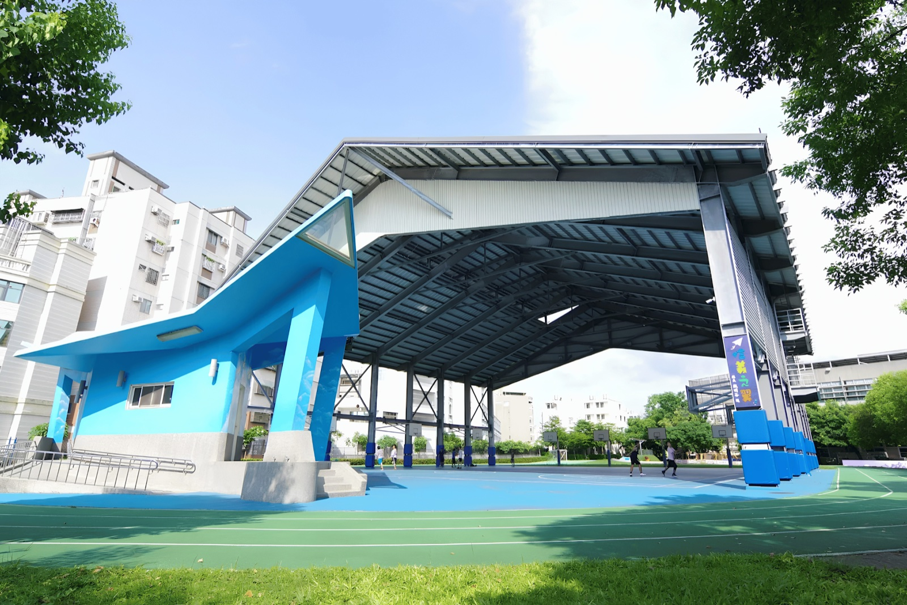
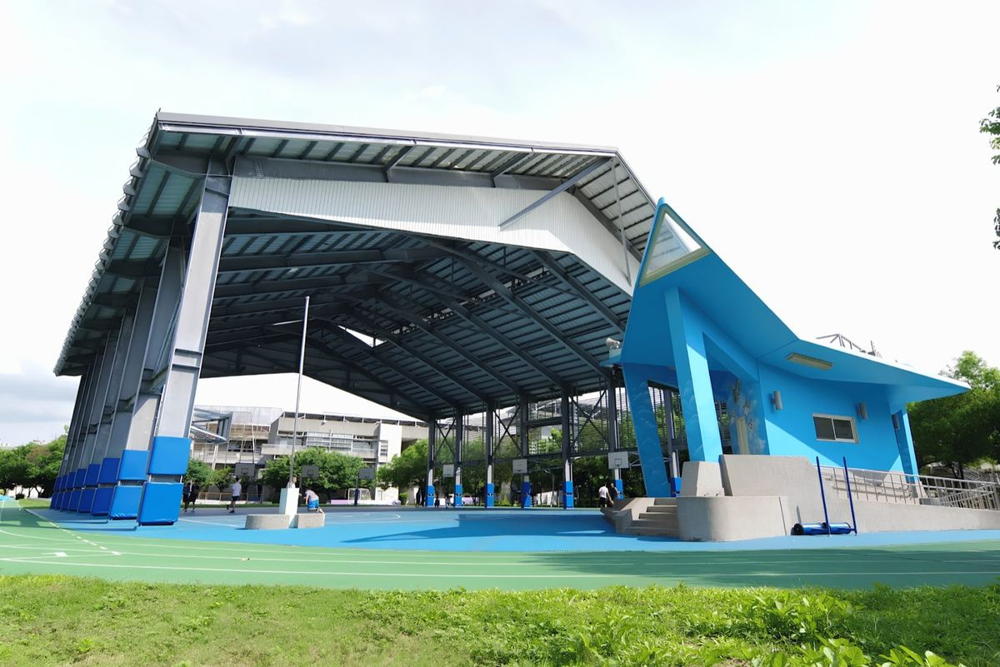
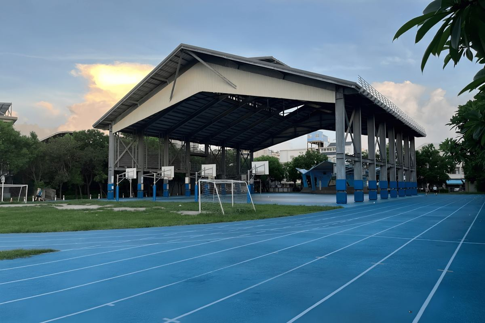

Where Grades 1 through 9 learn together — a rare and remarkable thing.
從小一到國三，在同一個校園完成九年學習——這在台灣並不多見。
Hsinyi is no ordinary school. Founded in 2003 to serve the growing families of Changhua's Xiangyang District, it was designed from the start as a nine-year integrated campus — a place where the youngest Grade 1 students and the graduating ninth-graders share the same corridors, the same teachers' spirit, and the same belief in continuous growth.
信義國中小不是一般的學校。2003 年創校，為彰化市向陽里快速成長的社區而設，從一開始就規劃為九年一貫校園——在這裡，小一的新生與即將畢業的國三生，走著同一條走廊，共享著相同的教育理念：不斷成長、持續前行。
The school's name says it all: Hsin-Yi — faithfulness and righteousness. The campus motto, "信義同心共好" (Faithfulness, Unity, Excellence Together), guides every classroom, every after-school club, and every early-morning announcement.
學校的名字本身就是一種承諾：「信義」——誠信與正義。校訓「信義同心共好」貫穿每一間教室、每一個社團，以及每天早晨的廣播。
Under Principal Wang Hsin-Yi, who took office in August 2024, the school continues to grow as a warm, caring community — with strong programs in bilingual education, reading, the arts, and athletics.
在 2024 年 8 月接任的王心怡校長帶領下，學校持續打造溫暖有愛的校園，在雙語教育、閱讀推廣、藝術展演與體育運動各方面均有豐富成果。
Grade 1 through Grade 9 on one campus. Curriculum flows seamlessly from elementary to junior high — no transfer anxiety, no disruption, just continuous, connected learning.
Selected by the Ministry of Education as a green building demonstration school, the campus is designed around three principles: human-centred, functional, and close to nature. Students learn sustainability by living it.
Winner of the Ministry of Education's prestigious National Reading Promotion Award (磐石獎). Reading is not an extra — it is the school's heartbeat, threaded through every grade and every subject.
From Word-of-the-Day videos to online bilingual study tours, English is woven into the rhythm of school life — not just a subject on the timetable, but a living language on campus.
Built from scratch, on purpose — and kept small on purpose too.
從零開始蓋起來的學校，也是刻意維持小巧規模的學校。
Hsinyi wasn't inherited — it was built. As Changhua City's booming Xiangyang and Nanmei communities outgrew their older schools, the county government set out to build something new: Changhua's first nine-year integrated campus, opened in 2003 to ease overcrowding and let neighborhood children grow up learning close to home.
信義不是承接來的學校，而是從零蓋起來的。隨著彰化市向陽里、南美里社區快速發展，原有學校日漸擁擠，縣政府決定興建一所全新的學校——彰化縣第一所九年一貫學校，於 2003 年啟用，讓社區的孩子們能就近就學、就近成長。
By design, Hsinyi stays small: just four classes per grade, from Grade 1 through Grade 9, on a compact 1.78-hectare campus. It's a deliberate choice — small enough that no child gets lost in the crowd.
信義刻意維持小校規模：一至九年級，每個年級只招收四個班，校地僅 1.7832 公頃。這是刻意的選擇——小到不會有任何一個孩子被淹沒在人群裡。
The vision came at a cost. Hsinyi's founding principal, Sun Bi-zong, poured himself into realizing the school's opening — and passed away before he could see it complete. His dedication is part of the foundation Hsinyi stands on today.
這個願景得來不易。信義首任孫碧宗校長，為實現創校願景日夜投入，卻不幸在學校落成前英年早逝。他的付出，是信義今天得以站立的基石之一。
Three words that have shaped every graduating class since 2003. Simple to say, profound to live.
See the campus in motion.
用影片認識信義的校園日常。
A walk around Hsinyi — from the front gate to the running track.
從校門口到田徑場，走一圈信義的校園角落。





